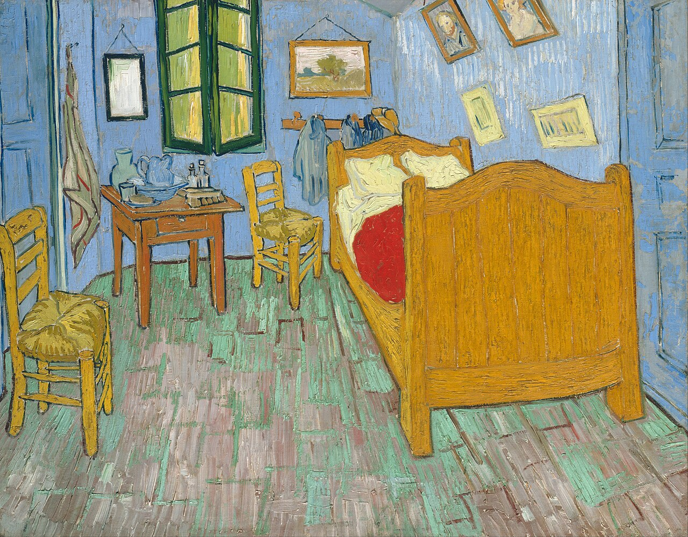

The Starry Night
Painted at Saint-Rémy, its surging sky turns a remembered view into a visionary nocturne.
A life in colour
A painter whose vivid colours and visible brushwork transformed landscape, still life, and portrait into fields of feeling.

Biography
Vincent van Gogh began making art seriously in the early 1880s after trying several other paths. His early work in the Netherlands used a dark, earthy palette and focused on the dignity of ordinary labour. A move to Paris in 1886 introduced him to new colour theories, Japanese prints, and the bright experiments of Impressionist painters.
In Arles, in the south of France, van Gogh developed the palette and energetic marks for which he is best known. He painted orchards, cafés, rooms, portraits, flowers, and the night sky with a sense of urgency and attention. During periods of ill health he also made some of his most celebrated paintings, including The Starry Night.
Van Gogh sold very little work during his lifetime. His letters, especially those to his brother Theo, show an artist committed to learning and to making art that could offer consolation, intensity, and honesty. His work became enormously influential after his death.
Van Gogh used thick, directional brushstrokes and saturated complementary colours to give paint a physical energy. Rather than simply record a place, he made colour and rhythm carry emotion—turning a field, a chair, or a night sky into something felt as well as seen.
Four works to know
Painted at Saint-Rémy, its surging sky turns a remembered view into a visionary nocturne.

A blaze of yellows and varied textures makes this still life feel both humble and radiant.

The angled furniture and clear colour create an intimate picture of a room made personal.
Fine strokes radiate around the artist’s face, showing his study of modern Parisian colour and touch.
Keep exploring
Move from van Gogh’s restless skies to another artist’s way of seeing.